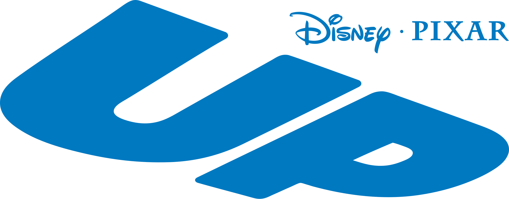

2009 | Animation, Adventure, Comedy
"Up" is a heartwarming story of 78-year-old Carl Fredricksen, who fulfills his dream of visiting Paradise Falls by tying thousands of balloons to his house. Accompanied by an eager young Wilderness Explorer named Russell, the two embark on an adventure filled with surprises, friendships, and self-discovery.
Directors: Pete Docter, Bob Peterson
Starring: Edward Asner, Jordan Nagai, John Ratzenberger, Christopher Plummer
© Disney/Pixar